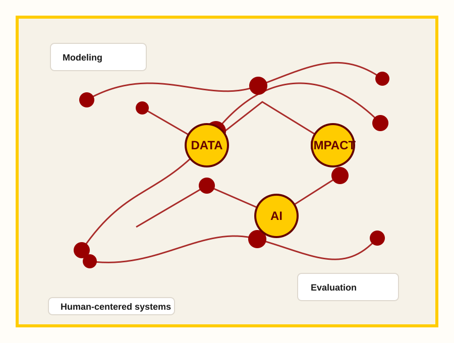

Human-Centered AI
Designing learning systems that augment expertise, support transparent decisions, and remain accountable to the communities they affect.
University of Southern California
USC IMPACT LAB studies how data, computation, and human-centered design can improve decisions, technologies, and outcomes in complex real-world settings.

Replace these text lockups with approved USC and USC Viterbi logo files from the official identity portals when ready for production.
About the lab
We build and evaluate computational methods, interactive tools, and engineering systems that help people understand, predict, and improve high-stakes processes. Our work spans algorithm design, field deployment, empirical evaluation, and interdisciplinary partnership.
This starter site includes placeholder content for research themes, team profiles, publication highlights, lab news, openings, and contact information. Swap in your real lab language as the group identity comes into focus.
Research
Designing learning systems that augment expertise, support transparent decisions, and remain accountable to the communities they affect.
Turning complex, multimodal data into reliable models, metrics, and tools for engineering, health, mobility, and public-interest applications.
Measuring how research prototypes perform in context through experiments, field studies, stakeholder feedback, and deployment-aware evaluation.
Projects
Platform
Placeholder summary for a project that combines modeling, visualization, and workflow design to help collaborators reason about complex tradeoffs.
Methods
Placeholder summary for a project focused on uncertainty, bias, missing data, and evaluation methods for systems deployed outside controlled settings.
Translation
Placeholder summary for a project that works with public agencies, clinicians, educators, or industry partners to move research toward practical impact.
People
Associate Professor, USC Viterbi
impactlab@usc.eduPh.D. student working on human-centered AI and evaluation.
ProfileUndergraduate researcher supporting prototypes and studies.
ProfileFormer lab member, now at organization or graduate program.
ProfilePublications
2026
Author One, Author Two, and Author Three. Conference or Journal Name.
2025
Author One, Author Two, and Author Three. Conference or Journal Name.
2024
Author One, Author Two, and Author Three. Conference or Journal Name.
News
Add a short announcement about the lab, its mission, and new opportunities.
Use this space for publication news, awards, talks, grants, and student milestones.
Highlight openings for Ph.D. students, undergraduate researchers, and collaborators.
Join us
We welcome students and collaborators who are excited about rigorous engineering, thoughtful deployment, and interdisciplinary teamwork.
Contact
Viterbi School of Engineering
University of Southern California
Los Angeles, CA